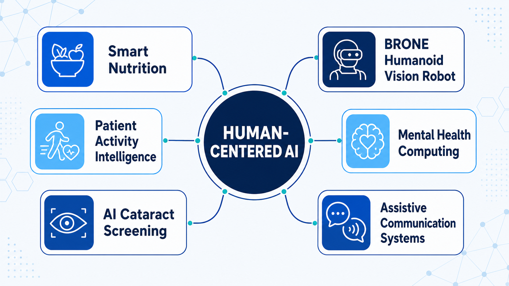

Ph.D., Health Systems
Okayama University · MEXT Scholar
Vision-Languange Systems
Yuita Arum Sari, S.Kom., M.Kom.,Ph.D.
Assistant Professor of Informatics · Universitas Brawijaya
Building AI systems that transform images, signals, and multimodal data into practical insight for nutrition, health, and inclusive technology and building a research ecosystem, named Vision-Language Systems where every undergraduate student has a pathway to grow from learner to researcher, from research to publication, and from innovation to real-world impact.
*Public-profile snapshot accessed August 2026; metrics change over time.
01 / About
Yuita Arum Sari is an Assistant Professor in the Department of Informatics, Faculty of Computer Science, Universitas Brawijaya.
Her work brings computer vision, artificial intelligence, and health informatics together to address problems in food and nutrition assessment, biomedical imaging, mental-health signals, and assistive systems. She has served as a permanent faculty member since 2016.
She earned her Ph.D. from Okayama University as a MEXT scholar and joined the Master Mobility Program at Warsaw University of Technology through Erasmus+. She also leads FILKOM’s integrated counseling service and contributes as an expert tutor in the AI Talent Factory program.
“AI is most valuable when it becomes understandable, useful, and close to the people it is designed to support.”
Research philosophyOkayama University · MEXT Scholar
Warsaw University of Technology · Erasmus+
Institut Teknologi Sepuluh Nopember
Universitas Brawijaya
02 / Research
My research links perception, prediction, and decision support with meaningful applications in health and human wellbeing.

Food recognition, portion and leftover estimation, ingredient prediction, and dietary support.
Cataract screening, blood-cell quantification, retinal imaging, and clinical image understanding.
Speech, text, and multimodal models for depression, dysarthria, and PTSD screening.
Human-aware perception, smart mobility, and accessible communication systems.
03 / Current projects
Each project page documents the problem, methods, expected impact, funding context, and connected student research.
Estimating hospital food leftovers and caloric intake through multimodal perception.
View project details ↗Spatio-temporal context modeling for rapid, evidence-driven disaster assessment.
View project details ↗Recognizing food types and predicting ingredient composition from meal imagery.
View project details ↗Contrastive representation learning to address limited biomedical image data.
View project details ↗04 / Publications & IP
05 / Teaching
06 / Student supervision
Explore thesis titles, student names, study programs, supervision roles, years, and completion status.
Open complete supervision archive →07 / Contact
Open to interdisciplinary research, academic partnerships, student collaboration, and meaningful AI applications.